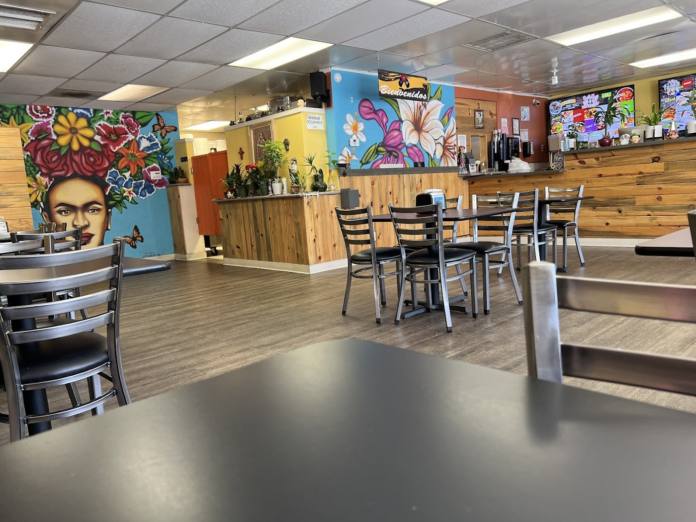
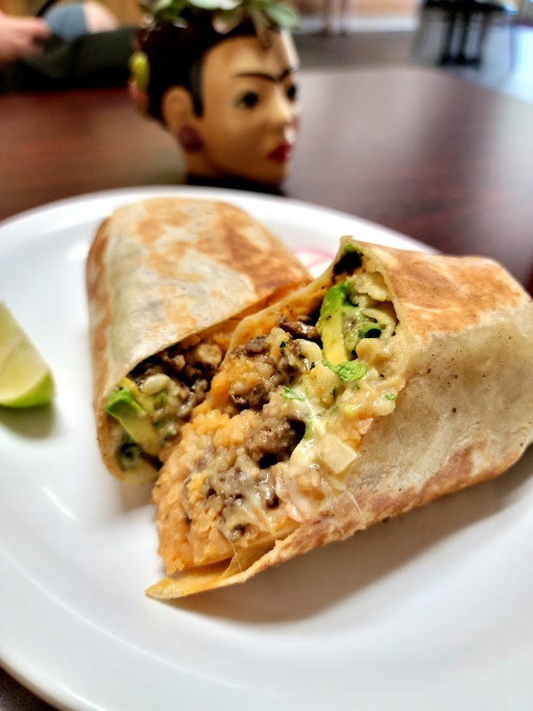
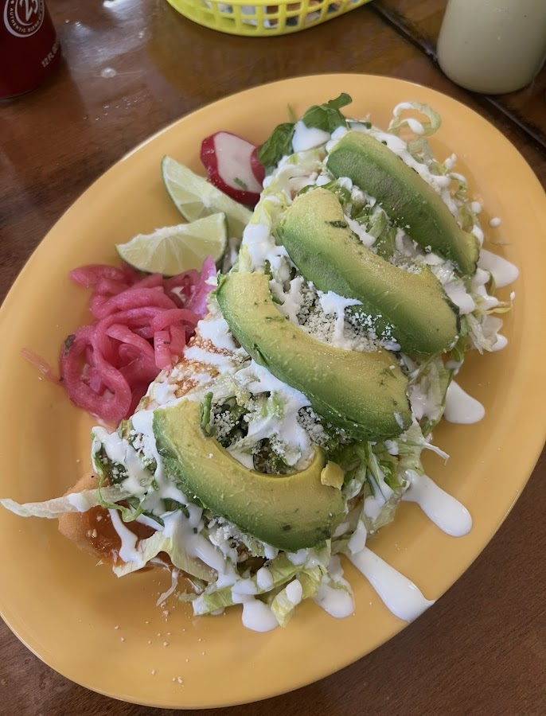
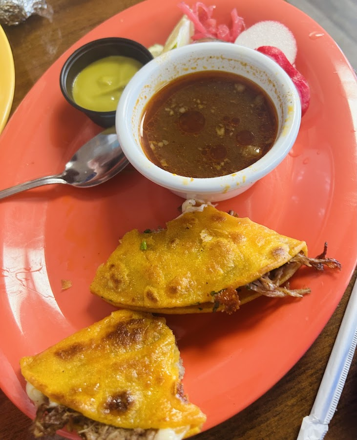
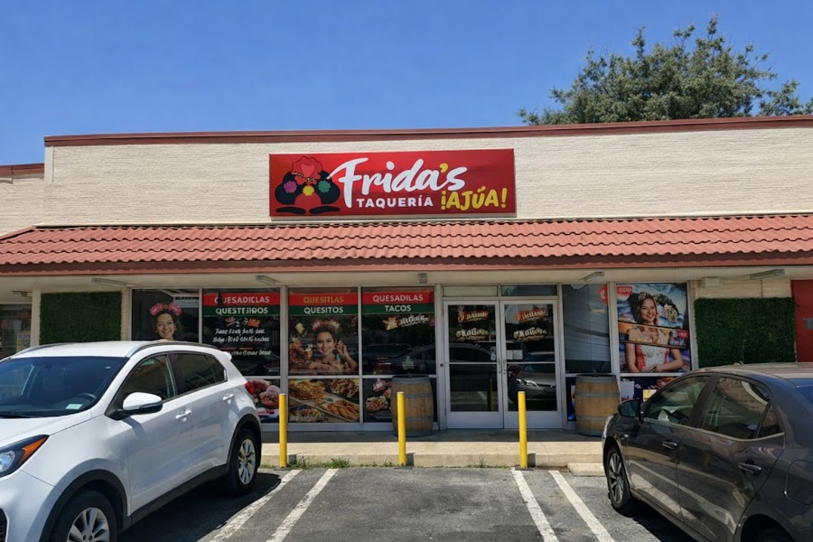
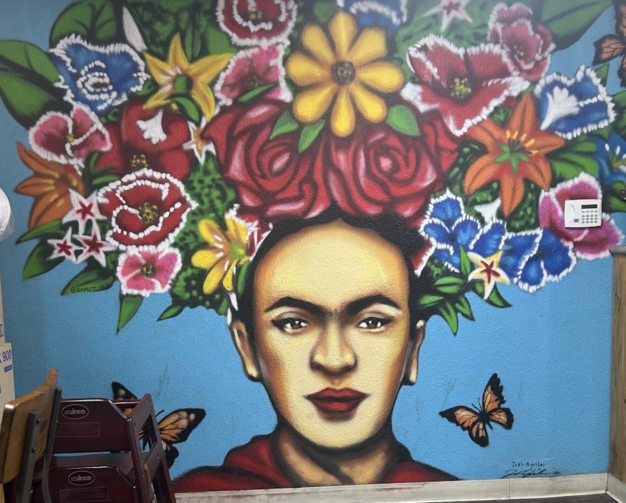

Modesto, California
Fresh masa, perfectly seasoned meats, and a kitchen that never cuts corners — this is the real thing.



"Cozy, authentic, and full of beautiful Frida artwork that makes the experience even better."
Frida's Taqueria Ajua! is a hidden gem in Modesto — a warm, family-run taqueria where the Frida Kahlo theme runs through every corner, from the hand-painted murals to the carefully curated décor. The pride in this place is visible the moment you walk in.
Expect big portions of housemade classics: quesabirrias with deep-red consommé, grilled burritos with fresh ingredients, sopes de pollo made from scratch, mulitas, quesadillas, and aguas frescas made in-house. Chips and salsa arrive the moment you sit down. Radishes and pickled onions come with every plate — because that's how it's done.
The team here genuinely cares — about the food, the atmosphere, and every customer who walks through the door.


Absolutely delicious food! I drove an hour to get here, and it was so worth the trip. The customer service was outstanding, and the Quesabirria are a must-try! I'll definitely be coming back again soon!
— Adriana S.
This place is a hidden gem! I ordered their homemade sope de pollo — fresh masa, perfectly seasoned chicken, and all the toppings just right. The whole vibe inside is authentic, cozy, and full of beautiful Frida artwork that makes the experience even better.
— Rigo S.
This is the BEST authentic Mexican food in the area, hands down! Every dish my family tried was spectacular. They grill their burritos, and the ingredients are fresh and perfectly seasoned. My kids said they would like to come back every Friday.
— Christin M.
Frida's Taqueria is such a cute and delicious little spot. I love seeing their Frida Kahlo theme all throughout. The details they put into it shows their love for the business. The meat is flavorful and their sauces are spicy and delicious.
— L. J.
Was randomly in town and wanted to try something new. So glad that we did. The food was absolutely phenomenal — we will definitely try to come back!
— Deth S.
| Monday | 9:00 AM – 7:00 PM |
| Tuesday | Closed |
| Wednesday | 9:00 AM – 9:00 PM |
| Thursday | 9:00 AM – 9:00 PM |
| Friday | 9:00 AM – 9:00 PM |
| Saturday | 9:00 AM – 9:00 PM |
| Sunday | 9:00 AM – 7:00 PM |